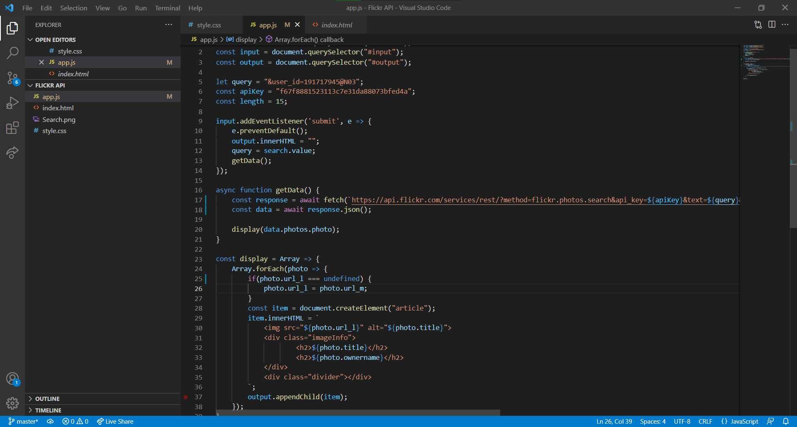

 Portfolio website MetaI made this page to make it easier to find what I have done. A mix of html, sass and javascript is used on the page. The design is made to be simplistic and easy to use with a "nighttime" theme. Page : link Github : link